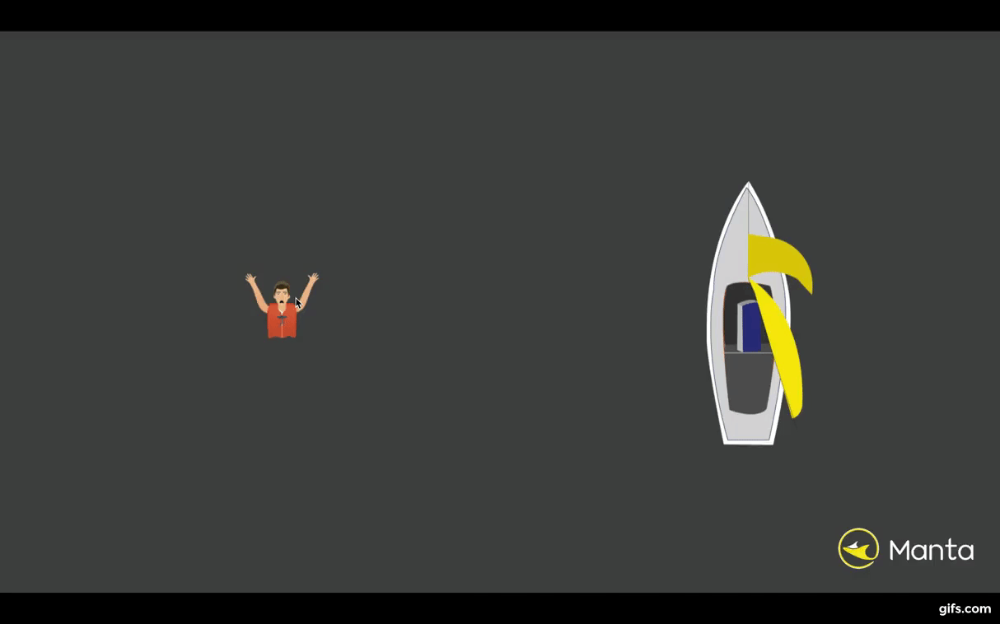

Manta is a man over board (M.o.B) recovery device for sailboats. It was designed and built over 4 months for a product design class . We were inspired after learning that over fifty percent of man overboard situations end in fatality.
In the event of a crew member falling overboard, the current procedure requires the boat to circle around and approach the victim slowly. This can take over 10 minutes and a skilled skipper to steer the boat. Losing sight of the victim can lead to never being able to recover them. The gif below shows the current recovery process.
My team wanted to design a better way to recover crew members who fall into water. Go here to see more about the process of how we validated the idea and built it.
With our system, when someone falls over, the remaining crew can quickly deploy Manta, a recovery system that launches inflatable life preservers and encircles the victim. Manta is a dual-barreled launcher device which can launch two projectiles simultaneously at an angle. each projectile has one rope to the other, and one back to the boat. Once launched, the system creates a triangle, encircling the victim and ensuring that they can't drift away.
Conceptual deployment sketch and the actual reach of the device:

The projectiles turn into life preservers on contact with water providing a large object to grab onto for the M.O.B. The Manta system, increases the likelihood of recovery, and reduces the time and skill needed for the recovery.
This video shows Manta in action on a boat:
Launcher
The launcher mechanism can be deployed within 15 seconds and create a perimeter of up to 100 feet. 22 caliber blank cartridges are used to power the projectiles. When developing Manta, explosive/black powder was the best and only propulsion system to be safe to use on a boat, while providing enough power and be handheld.
The user first pulls back the charging handle, depresses the safety and pulls the trigger. This three step process is to prevent misfires but also be able to fire quickly in emergencies. The safety can be pressed with the trigger hand's thumb making it a one hand launching mechanism. We designed the launching mechanism by first taking apart existing similar concepts such as dummy launchers and Ramsets. Dummy launchers are blank cartridge powered launchers for soft scented toys to train hunting dogs. Ramsets are construction grade nail guns that are also powered by blank cartridges. After taking these apart, our team designed and manufactured a custom trigger system that would pierce two blank cartridges to propel both projectiles. Along wiith the trigger, a double barreled spring system was built allowing both projectiles to be launched simultaneously every time.
Projectiles
Our projectiles are aerodynamic on launch but inflate to turn into life preservers. After dozens of designs, this was our final projectile design.
The life preserver is inflated using a CO2 cartridge. The inflation trigger mechanism uses a salt capsule. This salt capsule dissolves in less than three seconds, allowing a spring and pin to puncture the Co2 cartridge. This is how higher end automatic life jackets already operate. We implemented and used this mechanism. We added a molded plastic core over the trigger inflater to protect it from launch forces. The yellow inflatable was custom designed to meet regulatory specifications and support a 200 pound person. We were able to use TPU coated Nylon to manufacture the life preserver to be water proof and air-proof. To contain all of this, rolling up the inflatable and using some velcro allowed the projectile to stay contained on launch but open up when inflated.
Ergonomics
The launcher was made with a 3d printed shell finished with a rough texture for more grip. It also uses an ergonomic collapsible shoulder stock to absorb recoil. There are two angled sights to help with aiming, and we found that in all our trials users were able to encircle the victim, and even when trying to, weren't able to hit the target with the projectiles, making it safe to use for the victims in the water.
A hard shelled waterproof pelican case is used to store all of the components. This case would be mounted on the stern of the boat. Inside, the launcher is pre-loaded with the blank cartridges as well as the projectile. The rope is stored in the rope bags and tethered to the case. This simplifies the user experience and make deployment far faster. After use, we would expect users to bring their kits in for servicing, although the steps involved are not too difficult.
All in all, the Manta system is a significant upgrade over the current method of Man Overboard recovery. For one of the most signifiicant causes of death on water, Manta provides a higher chance for recovery for all crews regardless of skill level. It is safe and easy to use. With Manta, we hope for a safer world at seas.